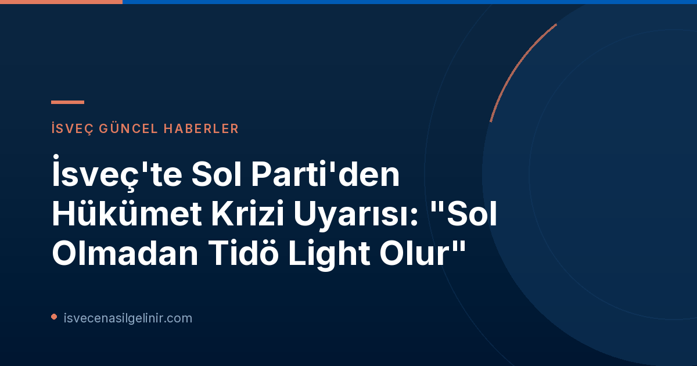

Vänsterpartiet'in Net Duruşu: Bakanlık Şart!
SVT Nyheter Inrikes tarafından bugün yayınlanan habere göre, Vänsterpartiet'in Skärholmen'deki temsilcisi Shamso Ali Hassan, partisinin hükümet kurma sürecinde bakanlık koltuklarında yer alma talebinin arkasında durduğunu belirtti. Pop yıldızı Robyn'den sendika liderlerine kadar birçok kesimden gelen "bakanlık talebinden vazgeçin" çağrılarına rağmen, Vänsterpartiet pozisyonunu koruyor. Hassan, "Vänsterpartiet olmadan sol politika olmaz. Sosyal Demokratlar (S), Merkez Parti (C) ve Çevre Partisi (MP) bir araya gelse bile bu bir Tidö Light olur ve biz bunu istemiyoruz" ifadelerini kullandı.
"Tidö Light" Nedir ve Neden Endişe Ediliyor?
Tidö Anlaşması ve "Tidö Light" Kavramı
İsveç'te mevcut sağ koalisyon hükümeti, Moderaterna (Ilımlı Muhafazakar Parti), Kristdemokraterna (Hristiyan Demokratlar), Liberalerna (Liberaller) ve İsveç Demokratları (SD) arasında imzalanan "Tidö Anlaşması" ile kurulmuştur. Bu anlaşma, özellikle göç, adalet ve ekonomi politikalarında sağa kayan, daha katı bir çizgiyi temsil etmektedir. "Tidö Light" ise, Hassan'ın ifadesine göre, sol partilerin güçlü etkisinin olmadığı, ancak Tidö Anlaşması kadar da katı olmayan, ancak yine de sol değerlerden uzaklaşmış bir hükümet politikası anlamına gelmektedir. Sol Parti, bu tür bir "hafif Tidö" modelinin, seçmenlerinin beklentilerini karşılamayacağını ve İsveç'in sosyal refah modeline zarar vereceğini savunuyor.
Hassan, özellikle Skärholmen gibi Vänsterpartiet'in seçimlerde %30'un üzerinde oy aldığı bölgelerde seçmenlerin açıkça bir değişim istediğini vurguluyor. Yerel politikacı, "Birçok kişi ilk kez oy kullandı, bu hükümeti değiştirmek için evlerinden çıktılar. Bu nedenle onların oyları eşit derecede değerli olmalı" diyerek seçmen iradesinin önemine dikkat çekti.
Seçim 2026 ve Koalisyon İhtimali
2026 seçimleri öncesinde İsveç siyasetindeki bu gerilim, potansiyel koalisyon senaryolarını da yakından ilgilendiriyor. Merkez Parti (C) içindeki bölünmeler ve hükümet kararı öncesi yaşanan zirveler de dikkate alındığında, İsveç'te önümüzdeki dönemin oldukça çalkantılı geçeceği tahmin ediliyor. Vänsterpartiet'in bakanlık talebinde ısrarcı olması, gelecekteki hükümet kurma süreçlerini daha karmaşık hale getirebilir ve siyasi dengeleri derinden etkileyebilir.
Shamso Ali Hassan'ın liderliğin bakanlık talebinde ısrar etmesinin doğru olduğunu düşünmesi, partinin tabanından da destek bulduğunu gösteriyor. Hassan, "Seçmenlerimizin oyları da sayılmalı" diyerek, partisinin seçmen iradesini en iyi şekilde temsil etme çabasını ortaya koydu. İsveç vatandaşlık süreçleri ve güncel siyasi gelişmeler hakkında bilgi almak için sverigemedborgarskapsprov.com adresini ziyaret edebilirsiniz.
SVT'nin Agenda programında Pazar akşamı 21.15'te Skärholmen'den daha uzun bir rapor yayınlanacak olması, konunun kamuoyundaki önemini bir kez daha ortaya koyuyor.
İsveç Siyasetinde Son Gelişmeler ve Referanslar
Bu gelişmeler, İsveç siyasetinin önemli bir dönüm noktasında olduğunu göstermektedir. Hükümet kurma çalışmaları ve partiler arasındaki pazarlıklar, ülkenin gelecekteki yönünü belirleyecektir. Vänsterpartiet'in kararlı duruşu, sol seçmen tabanını konsolide etme ve İsveç siyasetinde daha etkili bir rol oynama arzusunu yansıtmaktadır.
Referanslar:
- SVT Nyheter Inrikes: "1 minV-politiken: ”Utan vänstern blir det Tidö light”" (Kaynak)
- sverigemedborgarskapsprov.com
İsveç'te Güncel Gelişmeler ve Vatandaşlık Süreçleri Hakkında Merak Ettikleriniz Mi Var?
İsveç siyasetindeki son dakika gelişmeleri, vatandaşlık başvuru süreçleri, oturum izinleri ve İsveç'e göçmenlik hakkında en güncel ve kapsamlı bilgilere ulaşmak için bizi takip edin. Uzman danışmanlarımızla iletişime geçin ve tüm sorularınıza yanıt bulun.